소환의 돌
기타드랍 몬스터 61종
이 아이템을 주는 몬스터 61종
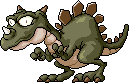
카파 드레이크Lv.45 · 회피 18빛을잃은동굴1 마스터 크로노스 시간의길<4>Lv.46 · 회피 24잃어버린시간<2> 다크 네펜데스Lv.47 · 회피 15버려진화원 단지Lv.47 · 회피 1810년 된 약초밭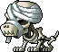
머미독Lv.47 · 회피 18유적의 무덤3 미스릴 뮤테Lv.47 · 회피 18연구소 B-1 구역 레이스Lv.48 · 회피 202호선<3구역> 삼단지Lv.48 · 회피 2050년 된 약초밭 원로 그레이Lv.49 · 회피 25바나드의 초원 훈련용 나무인형Lv.51 · 회피 18상급 수련장 러스터픽시Lv.52 · 회피 22구름공원6 라이오너Lv.53 · 회피 25노란빛의정원2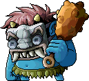
파란 왕도깨비Lv.70 · 회피 15깊은 산 흉가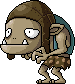
호브Lv.72 · 회피 25심술쟁이의 숲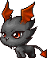
루이넬Lv.73 · 회피 28검은빛의정원2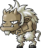
헹키Lv.78 · 회피 30가파른 언덕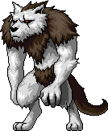
라이칸스로프Lv.80 · 회피 28늑대의영역1 스톰브레이커Lv.80 · 회피 30Mage Mastery Room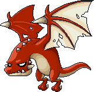
레드 와이번Lv.97 · 회피 37레드 와이번의 둥지 리셀스퀴드Lv.97 · 회피 37위험한 바다 협곡2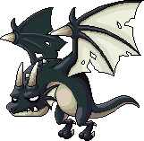
다크 와이번Lv.103 · 회피 38협곡의 서쪽길 뉴트주니어Lv.105 · 회피 38망가진 용의 둥지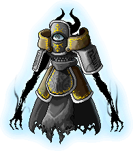
타나토스Lv.108 · 회피 38잊혀진 회랑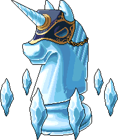
릴리노흐Lv.131 · 회피 47후회의 길5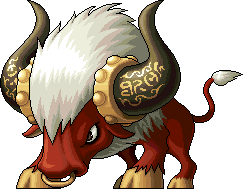
라이카Lv.141 · 회피 49망각의 길5드랍 정보는 고전 메이플 서버 데이터(Cosmic, AGPL-3.0) 기준 참고용이고 일부는 메이플랜드 자료로 확인했어요. 드랍률은 넣지 않았어요.